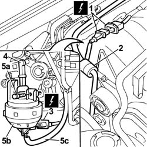

1072D54 ADJUSTABLE AIR DUCTS (V.I.S.) CONTROL ACTUATOR - R.R.
- Path
- Procedures > 10 ENGINE > 1072 inlet and exhaust manifolds > 1072D MODULAR INTAKE MANIFOLD (V.I.S.) > 1072D54 ADJUSTABLE AIR DUCTS (V.I.S.) CONTROL ACTUATOR - R.R.
- Kind
- repair procedure (removal / refitting; the operation number is the code)
- Applies to
- engines: 2.4 20V; all production periods
- Interactive page
- https://sloeber94.github.io/elrnDB-lThss/en/#/93885
Applies to: engines: 2.4 20V; all production periods
 Removing
Removing
 Refitting
Refitting- Open the boot, remove the cover on the left hand side and disconnect the negative battery lead.
See in Op. 7040D50 ENGINE COMPARTMENT UPPER SOUND INSULATION SHIELD - R.R.
See in Op. 1016A40 Ignition COIL COVER on cylinder head - R.R.
See in Op. 1008C10 Power unit REACTION ROD - Replace
1. Disconnect the electrical connection for the timing sensor.
 | Description | Connector |
|---|---|---|
1 | Timing sensor | K047 |
2. Disconnect the fuel vapour recovery pipe.
3. Disconnect the electrical connection for the adjustable air ducts control actuator.
| Description | Connector |
|---|---|---|
3 | Variable geometry solenoid valve | L015 |
4. Disconnect the ball attachment for the adjustable air ducts control actuator lever.
5. Undo the bolts (5a) and remove the adjustable air ducts control actuator (5b) after having disconnected the pipe (5c).

Applies to: engines: 2.4 20V; all production periods
Refitting
Removing- Connect the adjustable air ducts control actuator pipe, then place it in its housing and fasten it using the bolts.
- Connect the ball attachment for the adjustable air ducts control actuator lever.
- Connect the electrical connection for the adjustable air ducts control actuator.
| Description | Connector |
|---|---|---|
. | Variable geometry solenoid valve | L015 |
- Connect the fuel vapour recovery pipe.
- Connect the electrical connection for the timing sensor.
| Description | Connector |
|---|---|---|
. | Timing sensor | K047 |
See in Op. 1008C10 Power unit REACTION ROD - Replace
See in Op. 1016A40 Ignition COIL COVER on cylinder head - R.R.
See in Op. 7040D50 ENGINE COMPARTMENT UPPER SOUND INSULATION SHIELD - R.R.
- Connect the negative battery lead, then close the boot.